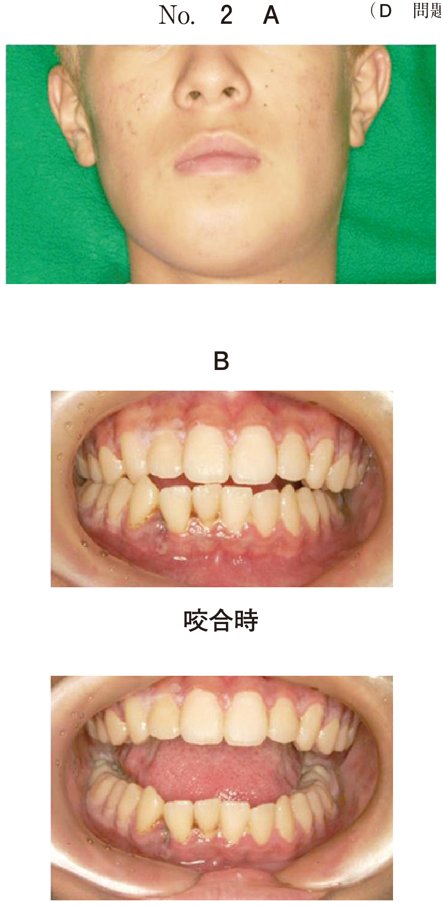

歯の陥入時の対応
陥入（Intrusion）とは
外傷により歯が歯槽骨内に押し込まれた状態。歯冠が短くなったように見える。
乳歯の陥入への対応
対応の原則
- 軽度の陥入：経過観察（自然萌出を待つ）
- 重度の陥入・後継永久歯への影響大：抜歯
経過観察の適応
- 陥入が軽度〜中等度
- 後継永久歯歯胚への影響が少ない
- 歯軸が唇側を向いている（歯胚から離れる方向）
抜歯の適応
- 重度の陥入
- 後継永久歯歯胚への影響が大きい
- 歯軸が口蓋側を向いている（歯胚に近づく方向）
幼若永久歯の陥入への対応
| 陥入の程度 | 対応 |
|---|---|
| 軽度（3mm未満） | 経過観察（自然再萌出を期待） |
| 中等度〜重度 | 矯正的整復、外科的整復 |
幼若永久歯は再萌出能力が高いため、軽度では経過観察が第一選択
後継永久歯への影響
- 萌出遅延・萌出障害
- 萌出位置異常
- 歯根形成不全
- エナメル質形成不全
過去問
105D6
7歳の男児。上顎前歯部の外傷を主訴として来院した。2日前に転倒したという。1┴1、B┘に軽度の動揺を認める。受傷前は、1┘の切縁は└1の切縁と同じ高さだったという。初診時の口腔内写真（別冊No.6A）とエックス線写真（別冊No.6B）とを別に示す。1┘への適切な対応はどれか。1つ選べ。


a 経過観察
b 固 定
c 歯肉切除
d 抜 歯
e 再 植
b 固 定
c 歯肉切除
d 抜 歯
e 再 植
正解：a
【解説】幼若永久歯（7歳の1┘）の陥入。口腔内写真で1┘が短く見え、陥入が疑われる。幼若永久歯は再萌出能力が高いため、軽度〜中等度の陥入では経過観察で自然再萌出を待つ。